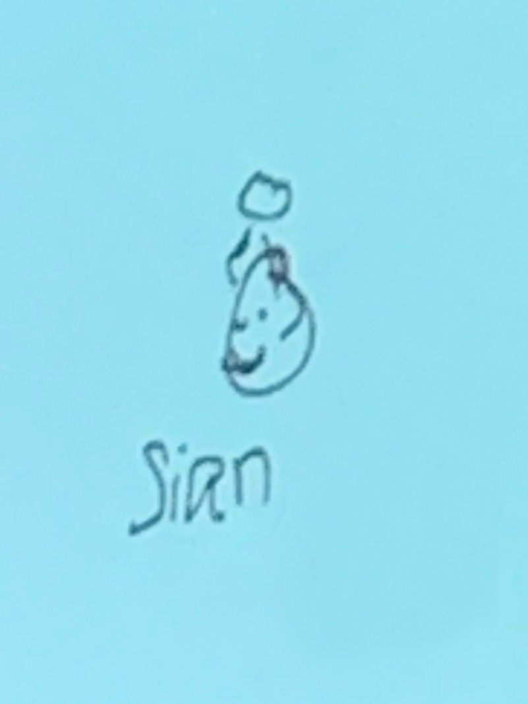

I'm Sian.
I’ve built my career in a variety of roles, all of which have required me to be an exceptional communicator, a creative thinker, and a leader. I’m never satisfied with “good enough” and always looking for ways to go above and beyond for customers and coworkers alike.
Read more about my experience


- Zumiez | Senior Store Manager.
- Train people, set product, identify trends, make profit.
- Zumiez | Event & Communication Coordinator.
- Run events, communicate & organize projects for 700+ retail locations.>
- Zumiez | Senior Analyst.
- Build out tools ot identify trends and loss to guide business decisions.
- Top 10 Chuck Norris facts:
- Chuck Norris can kill two stones with one bird
- Chuck Norris can hear sign language
- Chuck Norris counted to infinity. Twice.
- Chuck Norris is the reason Waldo is hiding.
- Chuck Norris's Blood Type is AK-47.
- Chuck Norris is the only person that can punch a cyclops between the eye.
- Chuck Norris can strangle you with a cordless phone.
- Once a cobra bit Chuck Norris' leg. After five days of excruciating pain, the cobra died.
- Chuck Norris can speak braille.
- Chuck Norris doesn't cheat death. He wins fair and square.